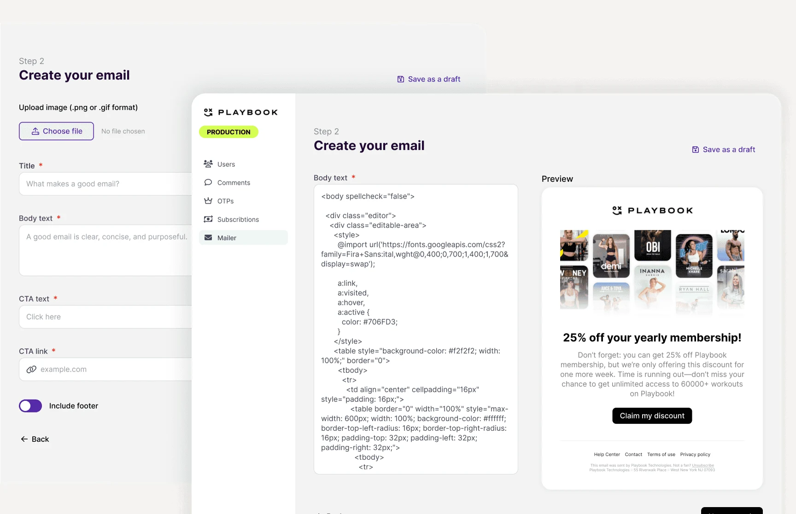
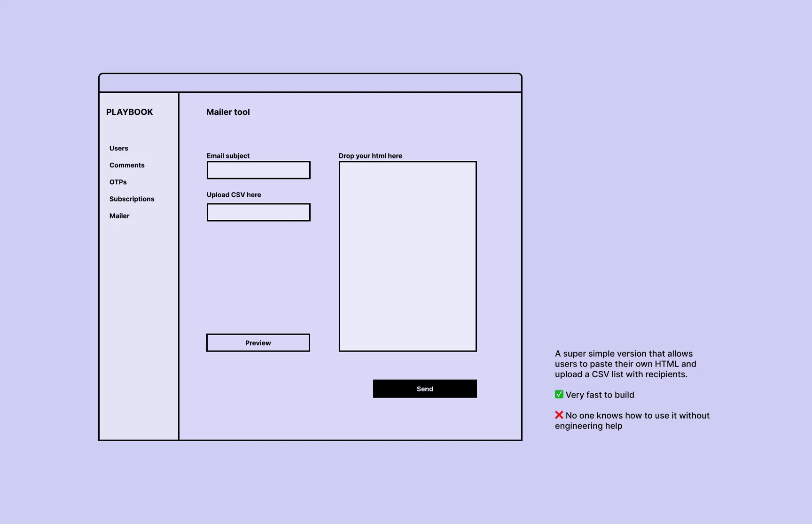
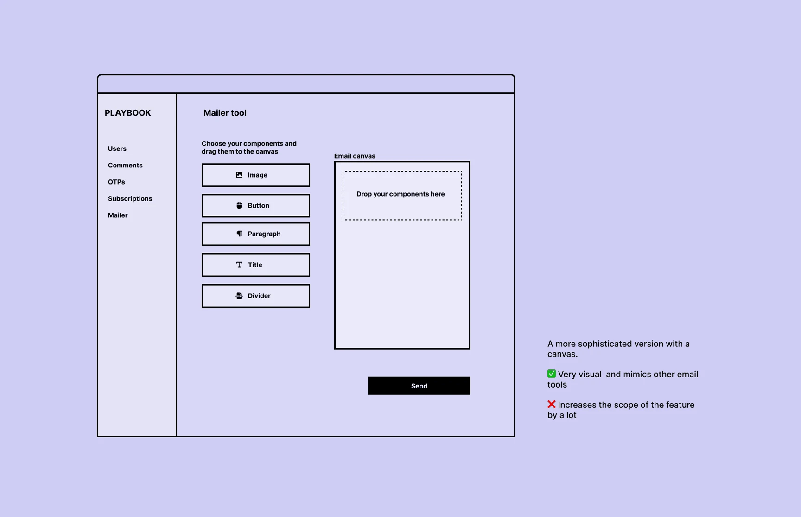
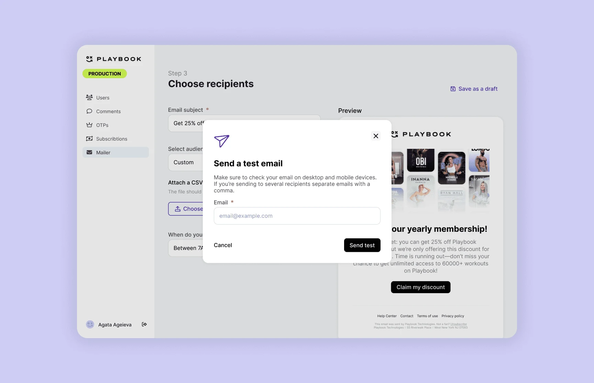

January 2024
Archive
Giving teams their independence back
Part of a self-service initiative at Playbook: helping teams and users work on their own, so engineers can focus on higher-impact work. I designed an in-house mailing tool.

- Discipline
- Product design
- Company
- Playbook
- Year
- 2024
- Timeline
- 2 weeks
01
Problem
Early on, Playbook built its back-office features on third-party integrations. That made sense while the return on building in-house was unclear. Over time, managing those integrations and covering every use case with them became hard.
So Playbook started a self-service initiative to replace external tools with in-house ones built for its own needs. My part was a mailing tool that would serve internal teams first, and select creators later.
02
What I did
The project started with the engineering team, with a clear goal: ship a lean mailing tool and build up from there. I joined to find the leanest version people could actually use.
The first idea was a field for HTML and a CSV upload, so people could paste in any email template. It didn’t hold up in testing: almost no one on the team had the technical knowledge to use it. The team knew tools like Klaviyo and wanted something similar, but that would have blown up the scope for engineering.


03
Solution
Product and business had to meet halfway. After a few jam sessions with my PM and rounds of testing with internal teams, I designed a tool that flexes with the person’s goal and technical skill: someone in marketing can send a promotion, and a PM can send an incident report to the affected users.
To keep it focused, I split it into three steps and showed only the fields each goal needs.

04
Impact
The team liked the first version. Engineers got focus time back instead of handling emails. Marketing ran campaigns on their own, and PMs told users about product updates and incidents without extra help.
05
Next steps
Analytics, and opening the mailer to select creators.